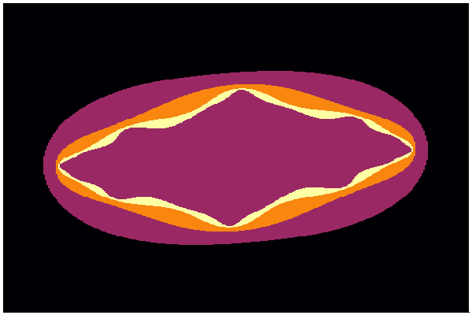

Hack Day projects
-
Julia Sets in Julia
Data Carpentry Astronomy Curriculum Survey
orbitize!
Cite_Astro_Software
Patching astroquery to work with the Open Astronomy Catalog
cubes-in-WWT
Julia Sets in Julia
Compute and plot Julia Sets in Julia
Creators
- Zé Vinícius and Lia Corrales
Other Information
[Back to top]
Data Carpentry Astronomy Curriculum Survey
We are developing a Data Carpentry Curriculum for Astronomy. During this time we developed and deployed a survey for the hack participants and our curriculum development mailing list to assess the needs of the community
Creators
- Azalee Bostroem
- Rodolfo Montez
Other Information

[Back to top]
orbitize!
Start an open-source orbit fitting package for imaged exoplanets and stellar binaries
Creators
- Sarah Blunt
- Jason Wang
- Henry Ngo
- Melisa Tallis
- Logan Pearce
- Dillon Dong
Other Information
[Back to top]
Cite_Astro_Software
starting checklist for astro software in papers
Creators
- Peter Teuben
- Daina Bouquin
- Will O'Mullane
Other Information
[Back to top]Patching astroquery to work with the Open Astronomy Catalog
This hack makes it possible to query data from the open astronomy catalog through the excellent astroquery package
Creators
- Jeremy Lusk
Other Information
[Back to top]cubes-in-WWT
allow overlay and interaction with (for now radio) cubes on the WWT sky
Creators
- Jonathan Fay
- Peter Teuben
Other Information

[Back to top]